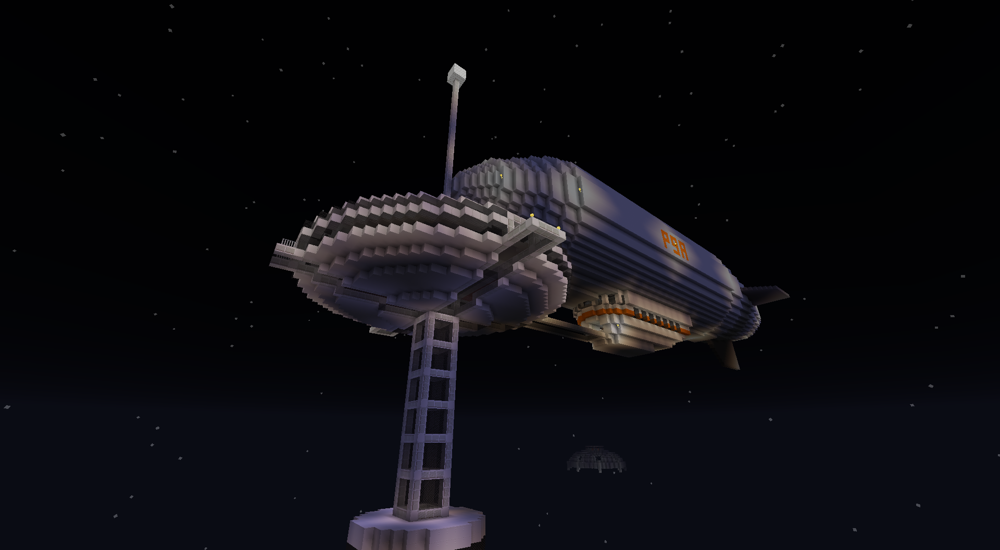
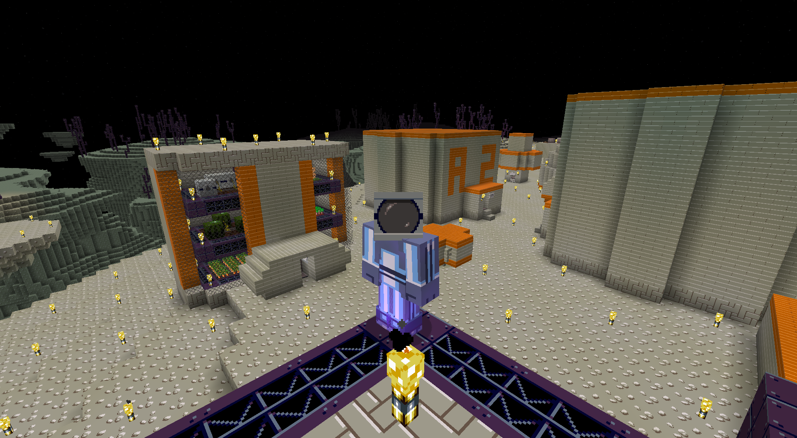
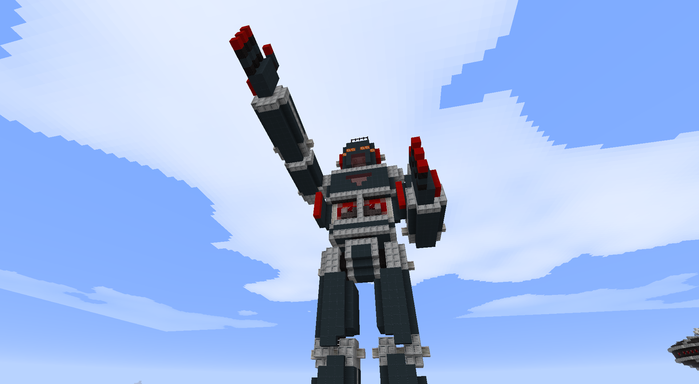
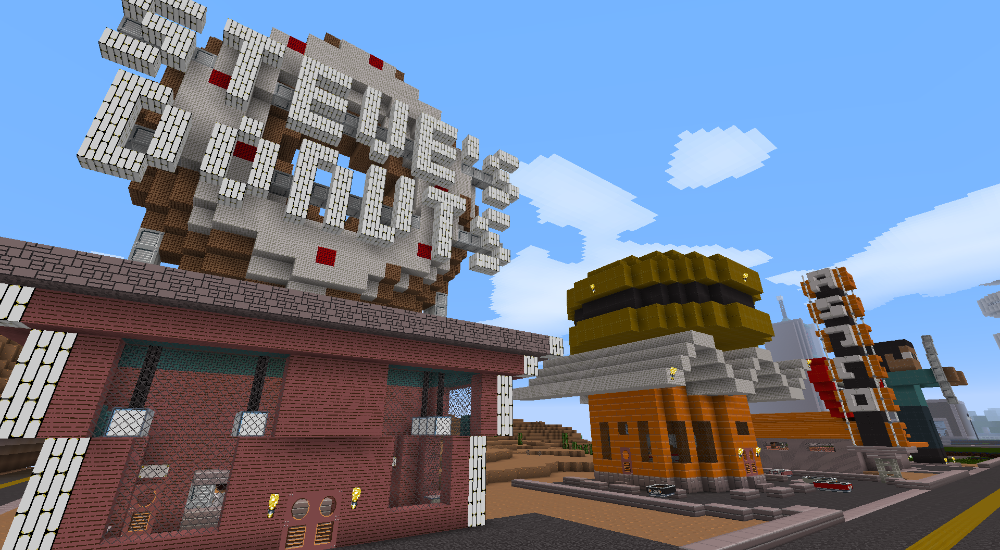
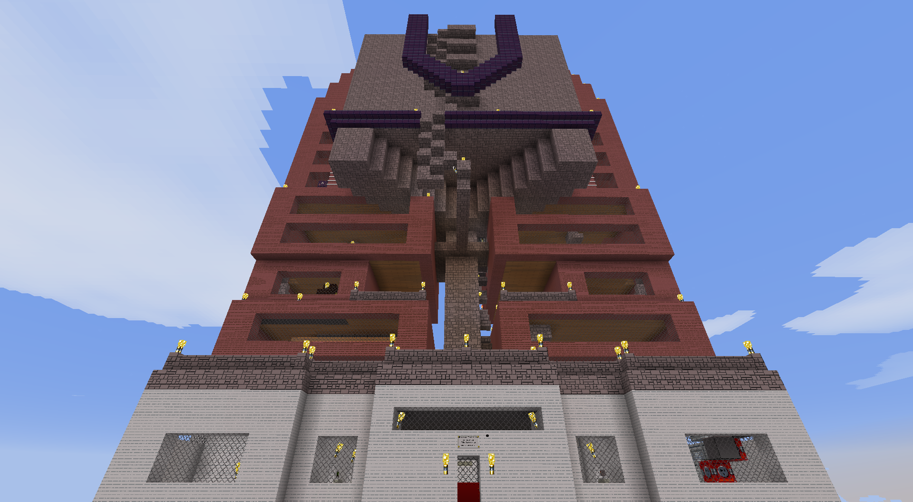

Build your own 50s B-Movie adventure! This a 32x32 pack. There's an emphasis on clean-looking large structures, but there are also detailed thematic blocks for close-ups. Many of the items have been given thematic makeovers with new English names.
"You know it's an alternate universe because there's a zeppelin."
Howdy from Moonbase Beta!
"Jet Jaguar will save us!"
Route 66, still going strong in the 21st Century!
Megalomaniacal scientists are so subtle...
Download Now!